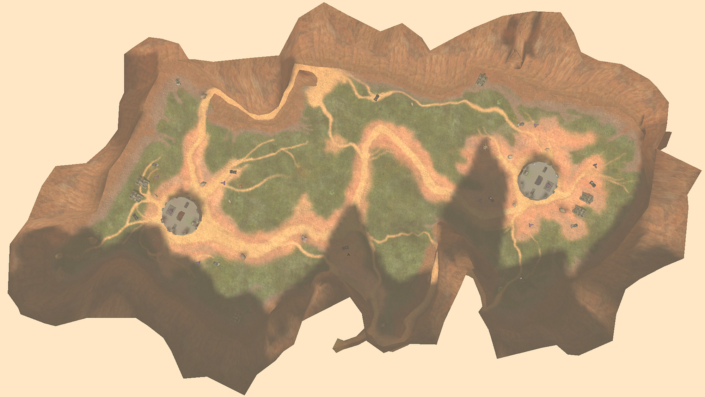

Blood Gulch Coordinate Grid
Hover an intersection to inspect it. Click to copy its actor spawn coordinate.
Grid spacing
1 world unit
2 world units
5 world units
10 world units
−
100%
+
Reset
Move over a grid point

Copied